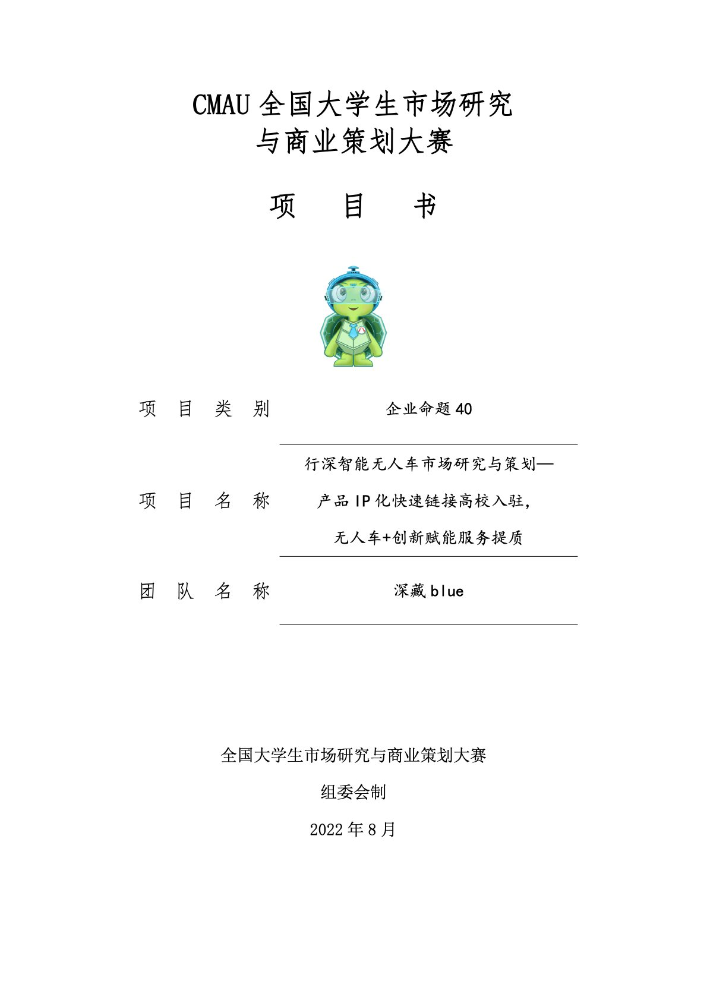

竞赛作品 · 市场研究
CMAU 市场研究与商业策划
企业命题项目，52 页项目书。从 PEST 宏观环境到高校用户的问卷与访谈，最后落到一份可以拿去答辩的商业策划方案。
- 赛事
- CMAU 全国大学生市场研究与商业策划大赛 · 企业命题
- 时间
- 2022.08（校内选拔赛 2022.09）
- 角色
- 负责人 · 问卷访谈设计 / 数据分析 / 项目统筹 / 答辩 PPT
- 团队
- 三人 · 深藏blue
- 交付
- 52 页项目书 · 问卷与访谈提纲 · 商业策划方案 · 答辩 PPT
- 方法
- PEST 宏观分析 · 高校用户问卷与访谈 · 数据整理与策划推导
- 成绩
- 校内选拔赛一等奖 · 预选赛一等奖 · 分赛区三等奖

背景 / 问题
这是 CMAU 全国大学生市场研究与商业策划大赛的企业命题项目：围绕企业的真实业务场景，产出一份从市场研究到商业策划的完整方案。
难点在于「研究」和「策划」得接得上：宏观判断要有依据，用户判断要有数据，最后的策略又要能落地。所以项目书不是一次写成的，而是先定研究框架、再补数据、最后倒推策划。
我的工作
- 问卷与访谈设计：面向高校用户设计问卷题项与访谈提纲，把「想了解什么」转成可回答、可统计的问题。
- 数据分析：整理问卷与访谈结果，提炼用户画像、需求与顾虑，为策划结论提供证据。
- 项目统筹：拆解任务与时间节点，协调三人分工，把关每一章的交付口径一致。
- 答辩 PPT：把 52 页项目书压缩成一条清晰的叙事线，负责答辩材料的呈现。
方法与流程
- 宏观：用 PEST 框架整理政策、经济、社会与技术环境，定下市场研究的边界与假设。
- 用户：问卷铺面、访谈补深，先看整体分布，再找典型用户的原因与场景。
- 策划：按「研究结论 → 策略方向 → 执行动作」的顺序推导，避免先有结论再找数据。
- 呈现：项目书分章节交付，答辩 PPT 只保留一条主线与关键数据。
成果
- 产出 52 页项目书，覆盖 PEST 宏观分析、高校用户问卷与访谈、商业策划方案。
- 校内选拔赛一等奖（2022.09）、预选赛一等奖、分赛区三等奖。
想细看这份项目书
封面图即为项目书首页，欢迎当面聊问卷设计与数据分析的部分。